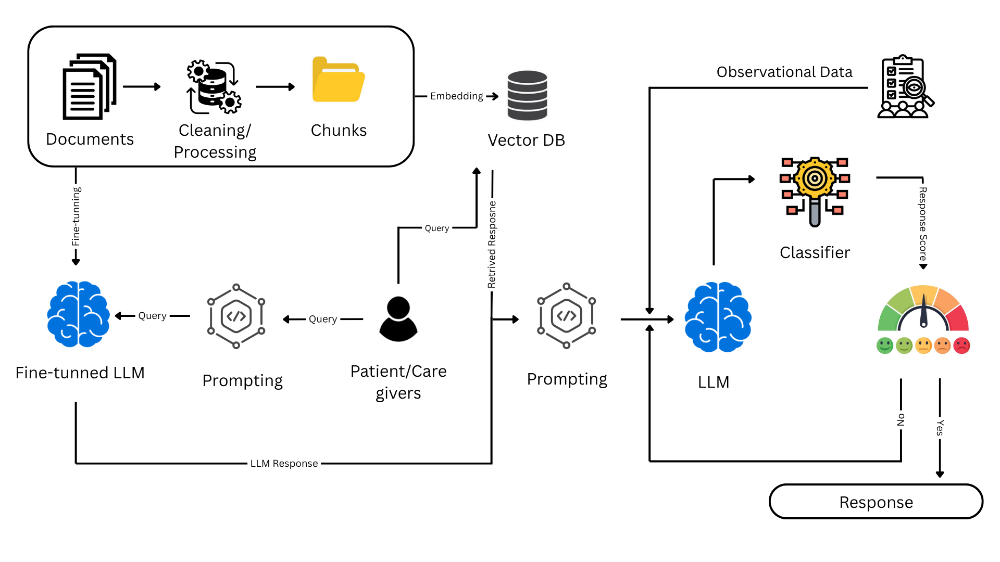

Research Team
Mohmmad Arif Shaik
Graduate Research Assistant
Department of Industrial and Systems Engineering
Kennesaw State University
mshaik14@students.kennesaw.edu
Awatef Ergai
Associate Professor
Department of Industrial and Systems Engineering
Kennesaw State University
aergai@kennesaw.edu
Maryam Eghbalizarch
Associate Professor
Department of Industrial and Systems Engineering
Kennesaw State University
meghbali@kennesaw.edu

Sohyung Cho
Professor and Chair
Department of Industrial and Systems Engineering
Kennesaw State University
scho28@kennesaw.edu
About the Research
This research focuses on using large language models (LLMs) to improve patient education, support self-management, and reduce hospital readmissions in individuals with heart failure. The project combines the capabilities of LLMs with human factors methods to create safer, more understandable, and patient-centered AI responses.
Research Problem
Patients with heart failure often struggle with medication instructions, symptom monitoring, diet and fluid restrictions, and recognizing warning signs. Misunderstanding and limited health literacy can contribute to poor self-management and increased readmission risk.
Project Goals
- Improve patient education using personalized AI-generated explanations.
- Support heart failure self-management with understandable guidance.
- Reduce hallucination through trusted-source retrieval and safety controls.
- Incorporate human factors insights from patients, caregivers, and clinicians.
- Adapt output based on patient literacy and communication needs.
Proposed Framework
Research Roadmap

Why This Matters
This work aims to build a human-centered AI system that is not only technically capable, but also safe, explainable, and accessible for patients and caregivers managing chronic disease.
Project Status
This project is still in development. IRB approval has been obtained for data collection through observational studies with Wellstar.